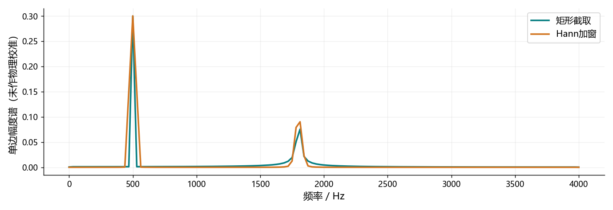

看图理解 · 跟着推演 · 对照真实结果
第05课 · 频谱里的一根峰到底表示什么
从500 Hz与1800 Hz叠加音出发，讲清FFT格点、窗函数、相位和STFT重建。
点播放开始；点右侧小节可跳到不懂的部分。进度保存在当前浏览器。
先看视频，再动手
不必先读完正文。跟着视频暂停预测，看到运行图时解释横轴、纵轴和曲线，再做下面的自测。完整图文保留作查阅；视频讲清本课核心算例，不把看完等同于掌握全部专题。
先修：第04课的数组形状与分帧；第01课的频率、相位。
- 能把FFT索引换成Hz并读懂幅度谱
- 知道加窗和补零分别改变什么
- 理解STFT为何需要相位、重叠和归一化
跟着运行：注释代码、实际输出与结果图
下面代码在生成本站时实际执行。这里只是教学小实验，不是完整模型训练或业务设备测评。
import numpy as np
fs, N = 8000, 256 # 观察32毫秒
t = np.arange(N) / fs
x = 0.3*np.sin(2*np.pi*500*t) + 0.1*np.sin(2*np.pi*1800*t)
spec = np.fft.rfft(x) # 保留复数幅度与相位
window = np.hanning(N)
win_spec = np.fft.rfft(x * window)
freq = np.fft.rfftfreq(N, 1/fs)
amp = 2 * np.abs(spec) / N # 单边幅度谱
amp[[0, -1]] /= 2 # DC和奈奎斯特点不翻倍
win_amp = 2 * np.abs(win_spec) / window.sum()
win_amp[[0, -1]] /= 2
restored = np.fft.irfft(spec, n=N) # 保留相位的回环
wrong = np.fft.irfft(np.abs(spec), n=N) # 故意丢相位
print('频率间隔:', fs/N, 'Hz')
print('FFT形状:', spec.shape)
print('正确回环误差:', np.max(np.abs(restored-x)))
print('丢相位误差:', np.max(np.abs(wrong-x)))
本次实际输出
频率间隔: 31.25 Hz FFT形状: (129,) 正确回环误差: 1.6653345369377348e-16 丢相位误差: 0.6830111205428785

闭卷自测：16 kHz采样、400点FFT，频率间隔和索引25对应频率是多少？
间隔16000/400=40 Hz；索引25对应1000 Hz。补零只加密频率取样，不增加真实观察时长。
逐字讲稿 · 可定位回看
今天的输入是两条正弦相加，一条五百赫兹、幅度零点三，另一条一千八百赫兹、幅度零点一。时域曲线会弯来弯去，但组成它的积木只有两种频率。
波形适合看什么时候发生变化，频谱适合看有哪些频率成分。不是把横轴标签从时间改成频率就行，而是要进行一次明确的数学变换。
我们先用三十二毫秒片段理解这次变换，再把同样的操作搬到连续短帧上。这样就能理解声谱图为什么有时间、频率和颜色三个维度。
可以把变换理解为：依次问这段数据与每种标准旋转节奏有多像。对每个频率，既比较余弦方向，也比较正弦方向，把两种结果放进一个复数。
复数不是多出来的神秘声音。它同时携带系数大小和相位；绝对值描述大小，角度保留周期位置。只留下绝对值，会删掉一部分重建所需信息。
图里的求和遍历这段全部样本。FFT是加速计算这个离散傅里叶变换的算法，不能把FFT和DFT当成两种不同的声学现象。
采样率八千，长度二百五十六，频率格点间隔是三十一点二五赫兹。索引十六乘这个间隔，才得到五百赫兹。索引十六不是十六赫兹。
一千八百除以三十一点二五，得到五十七点六，不是整数。也就是说，第二条纯音不正好落在我们这把离散尺子的刻度上，后面会看到它散到附近。
真实输入具有共轭对称，实数FFT只存非负频率，所以二百五十六点输入返回一百二十九个复数。起点是直流，终点是四千赫兹的奈奎斯特点。
我们只观察了有限片段。变换对它作特定的周期解释时，首尾接不上会带来边界变化。原来单一频率的成分，可能在许多附近格点都有系数。
五百赫兹在三十二毫秒里恰好十六圈，更适合当前格点；一千八百赫兹是五十七点六圈，边界不整齐，所以泄漏更明显。
因此频谱上一片小尾巴，不能直接断言录音里多了很多噪声。应先检查观察长度、窗函数和频率是否对齐格点，再判断物理来源。
Hann窗把片段两端逐渐压低，减轻边界突变，通常降低远处旁瓣。但峰附近的主瓣会更宽，所以不是所有地方都变得更精细。
如果要找强音旁边很弱的成分，降低旁瓣可能很有帮助；如果要分开两个很近的强音，主瓣宽度又会成为限制。选择窗口要对应具体问题。
把片段补零会让频谱采样网格更密，曲线看起来更顺滑，却没有增加真实观察时长。不能把二百五十六点补到一千零二十四点，宣称多录了四倍信息。
前五行生成两频率叠加的短片段，再计算复数FFT。这里不只保存绝对值，因为后面要做保留相位的逆变换回环。
随后加Hann窗并建立赫兹坐标。单边谱把内部频率贡献翻倍，而直流与奈奎斯特点不翻倍。加窗谱用窗的总和做幅度标度，避免只因窗压低了数据就误读峰高。
最后做两个逆变换：一个使用完整复数谱，另一个故意只用绝对值。两者输出都能有正确长度，但数值是否正确需要检查误差，不能只看程序有没有报错。
实际图中在五百与一千八百赫兹附近出现两组峰。Hann窗曲线在峰附近更宽，远处泄漏通常更低。第二组不落整数格点，峰高也受有限片段与窗影响。
不要把某一个格点高度直接等同于纯音的精确真实幅度，更不要叫它声压级。这里是按已声明规则计算的未校准数字幅度谱。
保留完整复数谱的回环误差接近浮点精度；丢相位的回环误差明显变大。这个实验说明相位对原波形重建重要，但只验证了一帧FFT，不冒充完整流式STFT处理器。
频谱之前还有一个必须认识的操作：卷积。把房间想成一次拍手会产生直达声和稍后反射。连续输入的每个采样，都按同一个脉冲响应留下后续影响。
手算输入一、二、三，权重零点五、零点五。输出依次是零点五、一点五、二点五、一点五。最后仍有尾巴，因为系统还记着前一个输入。
完整长度是输入长度加滤波器长度减一。这会影响评测对齐。卷积解释依赖线性时不变近似，削波、自动增益和时变路径不能无条件用固定卷积描述。
一句话前后内容不同，只算一次整段频谱会混合这些时间事件。STFT每隔一段距离取一个短窗口，加窗后做FFT，得到时间帧乘频率格点的复数矩阵。
例如一万六采样率，五百一十二点窗口是三十二毫秒，一百二十八点帧移是八毫秒。窗口覆盖范围与移动步长是两个参数，不要把它们混为一谈。
大窗通常更容易看清细致频率结构，小窗更容易定位突然变化。但帧移八毫秒不代表总延迟八毫秒，还要算取窗方式、未来前瞻、缓存与计算时间。
每帧逆变换后，要把它放回原来的时间位置。窗口有重叠，同一个采样会收到多帧贡献，所以还要按对应权重归一化，而不是简单把帧拼接。
如果分析和合成各乘一次相同窗，权重累积就是窗的平方和；若窗口方案不同，就应按实际乘积和重建条件处理，不能死记所有方法都除窗平方。
边界也重要。Hann端点为零，如果某个原始采样没有被有效窗口覆盖，就可能无法恢复。完整原课给出了补零、重叠和裁剪的回环代码，先通过回环再写频域增强。
声谱图的横轴是时间，纵轴是频率，颜色可能是幅度或功率的对数值。先看标注，再解释亮带。稳定纯音常形成横向带，短点击常形成较宽频率范围的瞬态。
如果降噪前后各自按最大值归一化，微弱噪声也可能被画得很亮。比较时必须说明是否使用共同参考和共同颜色范围，否则视觉强弱不等于实际强弱。
还有一个常见错误：把图像颜色保存下来后期待精确还原声音。颜色通常已丢相位，还可能经过裁剪、对数和量化，不是原始复数STFT的完整替代品。
暂停算一下：一万六采样率，四百点FFT，格点间隔是多少？索引二十五对应什么频率？请别忘了索引从零开始。
间隔是四十赫兹，索引二十五对应一千赫兹。如果把同一片段补零到一千六百点，格点会更密，但真实观察时长并没有改变。
下一步选一条有使用许可的短音频，画正确坐标的声谱图，再做STFT到逆STFT回环，检查长度、误差和首尾。这个基础测试比急着叠更深网络更能排除系统错误。
适用边界与参考正文
实际代码验证单帧FFT、窗函数及相位回环，不是完整STFT或流式引擎；多帧重建的完整程序保留在本课图文教程，幅度谱未作物理校准。
图、公式、代码结果均由本站制作；旁白是本地中文语音合成，不是教师真人录音，也不是 NotebookLM 生成。没有向 Google 上传项目材料。